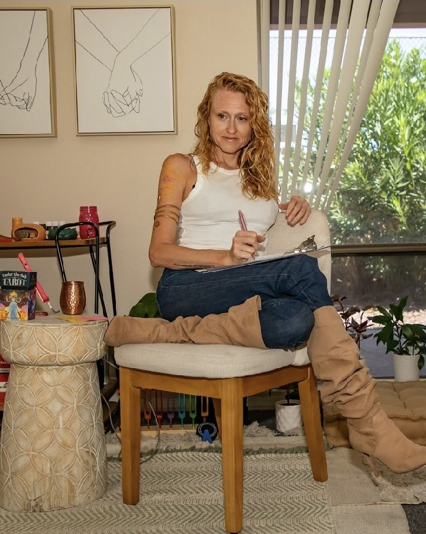
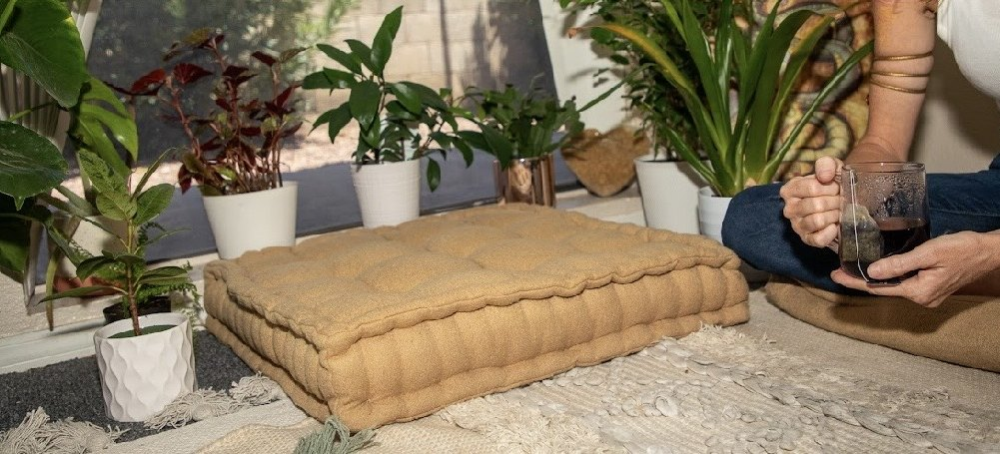

Self awareness
Knowing yourself. The patterns, the parts, the inner critic, the wounds, the wisdom. Awareness is where every shift begins.
Individual Therapy · Mesa, AZ
Holistic, trauma-informed therapy for pre-teens, teens, and adults. The slow, sacred work of coming home to yourself.
I know that, because I've been on your side of this page too. The one scrolling at midnight, half-hoping the right person exists and half-afraid of what'll happen if she does.
If you're here, you're probably carrying something. Maybe it's anxiety that won't quiet down. Maybe it's a sadness you can't name out loud. Maybe you're going through the motions of a life that looks fine on paper but feels like a stranger's. Maybe you've been doing the strong-and-capable thing for so long that you've forgotten what soft feels like.
Whatever it is. You don't have to keep doing it alone.
You matter. Especially here, in this sacred space, where you can get to know yourself. The real you. The unfiltered, authentic, raw, and real you. The you you need to be in order to truly create the life you want. The you you've been scared to be, because of past stuff that taught you it wasn't ok to be you.

Coming home to Self
Individual therapy is about coming back home. To Self. The authentic Self we lose along the way. It's about getting to know yourself deeper. Expressing and living authentically. Wholly. It's about healing. About growth. About evolving into the highest version of yourself. That vision of Self you dream of becoming, because you are that person, waiting to be embodied. It all starts with YOU.
Trauma, or the wounding we experience in life, is the root of our struggles. Anxiety, depression, anger, unhealthy relationships, insecurity, shame, addiction. We explore the past in order to heal it. We learn how to show up for the present moment in healthier ways so we can create a different future.
The relationship we have with ourselves is the foundation for everything else. Our wellness. Our relationships with others. Our ability to manifest the life we want.
Knowing yourself. The patterns, the parts, the inner critic, the wounds, the wisdom. Awareness is where every shift begins.
Worth that isn't conditional on what you produce, how much you give, or how perfectly you perform. Inherent. Steady. Yours.
Not walls. Lines that protect what matters. Saying no without guilt. Saying yes without resentment. Knowing the difference.
Showing up for yourself the way you show up for the people you love. Honoring your needs, your limits, your truth.
The unfiltered, real you. The one underneath the version you've performed for everyone else. Permission to bring her forward.
The hardest one. The work of meeting yourself with the same softness you've spent a lifetime offering everyone else.

"I'm in tank tops and boots, not a starched coat."
I bring all of my Self into the room, so you feel safe bringing all of your Self. Your nervous system, your history, your body, your spirit, your story. We might talk for half a session and do a somatic exercise for the other half. We might use EMDR to process something old. We might sit in silence. We might laugh.
My office isn't sterile. It's a place to land. I won't pretend I have a fix for you, because you don't need fixing. You need a witness, a guide, and a steady hand while you figure out what's underneath all of it. Let's brew a cup of tea, take some grounding, mindful breaths, and see where the session takes us.
Trauma processing without reliving it
For the body that holds it too. Easy, gentle, at your pace. We do the practices together.
Meeting the parts you've been avoiding
Practical tools that actually work

Before we can heal anything, the body has to feel safe enough to let us in.
Most therapy talks about thoughts. We start lower than that. We start with the body. With breath, posture, the soles of your feet on the floor, and the simple question of whether your nervous system feels safe in the room.
That's earthing. That's grounding. It's not a metaphor. It's a physical settling. It's the moment your shoulders drop a half inch and you stop holding your breath without realizing you were. Until that happens, the deeper work can't land. After it happens, almost everything else gets easier.
This is why so many of our sessions include somatic practice. Slow breath. Body scans. Tracking sensation. Small movements that bring you back into the body you've been living above for years. It's powerful. It's vital. It's one of the most underrated parts of real healing.
Learning to feel safe in your own body, which is where every other piece of healing starts.
The simple, powerful act of arriving. Coming back to the present moment, through the body.
Building a felt sense of "I'm here, I'm safe, I can stay." We practice it together so you can take it home.
Bring it with you. It deserves to be seen, held, healed.
The kind that lives in your chest, your jaw, your sleep. Practical regulation skills plus the deeper work of understanding what your nervous system is trying to protect you from.
The flat, going-through-the-motions kind. The grief-shaped kind. The kind that disconnects you from seeing the beauty around you. We find what's underneath and work with it.
Big-T and little-t. Childhood stuff. Relational stuff. The things you've never said out loud. EMDR, parts work, somatic processing. Whatever fits.
Divorce, career shifts, identity changes, becoming a parent, losing a parent, leaving a faith, leaving a marriage, leaving a version of yourself.
The inner critic that tells you you're too much and not enough at the same time. We learn to hear it, befriend it, honor it, and help it heal.
When you've given so much for so long that there's nothing left for you. We rebuild from the inside out.
Recovery, relapse patterns, the shame underneath. I know these patterns, parts, and pain intimately. There's a craving here. Let's figure out what it truly needs.
Why you keep ending up in the same dynamic. What's underneath it. How to choose differently.
Relationship challenges that trace back to the earliest blueprints. How we were taught to love. How to rewrite it.

I bring clinical training, somatic practices, EMDR, parts work, and years of lived experience into every session. We don't just talk about what's wrong. We work with your whole self: your nervous system, your body, your story, your spirit.
The goal isn't to fix you. It's to help you feel safe enough to meet the parts of yourself you've been avoiding, and to build a life that actually feels like yours.
A free consultation is all it takes to find out if this is the right space for you.
Schedule Free ConsultationThree steps. No hoops, no waitlists, no complicated intake process.
A short call, on the phone or video. You tell me what's going on, I tell you how I work, and we both decide if it's a fit. No pressure, no commitment.
A real conversation. You get to ask questions too. You get to decide what to share and how much. There's no script and no rush. It's your journey, walked your way.
Whatever that looks like for you. However it fits. You might choose weekly, bi-weekly, one session or a double session, or maybe even intensive work. You decide. In-person at our Mesa office or secure telehealth across Arizona.
Investment
Rates vary by therapist, based on experience and specialization. We're out-of-network and provide superbills you can submit for possible PPO reimbursement. HSA/FSA accepted.
Format
Our Mesa office at 2160 E Brown Rd, Suite 3, or secure video anywhere in Arizona. Your call.
Length
Weekly, every other week, or intensive doubles. You set the pace. What to wear? Whatever you'd wear to your best friend's house.
Alicia helped me find my true self, my inner peace, and my full potential as a partner and as a person. Her ability to help you see inside of yourself and find the missing pieces of what you are searching for is extraordinary. I would say I owe Alicia my life, but she would tell me I did it all myself.
Sessions range from $85 to $185. Therapist rates vary based on experience and advanced training. Some of our therapists are starting as interns or working under supervision toward independent licensure. Others are supervisors with specialized training. The Wild Within is out-of-network. We provide superbills you can submit for possible insurance reimbursement.
No. We're out-of-network, which means we don't bill insurance directly. I provide superbills (detailed receipts) that clients with PPO plans can submit to their insurance for possible reimbursement. Going out-of-network keeps your record private and lets us work without insurance dictating session length, frequency, or focus.
A real conversation. Us getting to know each other at a pace that feels comfortable. You get to share what you want, ask questions, and decide whether this is the space for you. No homework, no script, no rush.
It depends on what you're working on. Some clients come for a few months around a specific issue. Others stay for a year or more doing deeper work. Some clients always want a space that's theirs, to continue processing life as it unfolds. It's your call. It's your journey.
Yes. Therapy is available in-person at our Mesa office or via secure telehealth anywhere in Arizona. (Coaching is available nationwide. Therapy is licensed AZ-only.)
If you're asking the question, that's already a sign. The free consultation exists for exactly this. No pressure, just a real conversation to see if this feels right. You don't have to be in crisis to come to therapy. You just have to want something to be different.
Reconnect, repair, and build a relationship that feels like home again. For couples who love each other and are tired of the same fight.
Learn more
Real psychotherapy with the medicine. For treatment-resistant depression, PTSD, and trauma that hasn't moved with traditional approaches.
Learn moreFor when you're not in crisis but you know there's more. Forward-looking, goal-oriented, available nationwide.
Learn moreThe first conversation is free. No commitment, no script, just a chance to see if we're the right fit.